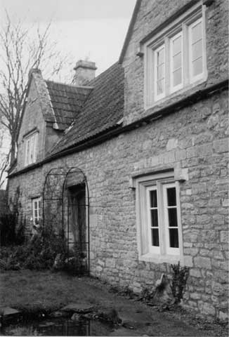

Type of buildings:
(A) Detached former farmhouse with rear extension and (B) Detached former barn
Listing:
Grade ll
Plan and elevation:
(A) House - Single pile, three unit, 1 1/2 storeys.
(B) Barn - combination type.
Summary of the probable building
history:
(A) House - 16th Century. Altered late 17th or early 18th Century and again
in the 19th and 20th Centuries. (B) Barn - Late 18th Century.

West elevation
(A) The farmhouse
Layout:
The main house block is a simple rectangle aligned approximately north-south.
It is divided into three main rooms. A single storey lean-to has been recently
added to the north end. The northern main room is divided from the central room
by a cross passage. A range at right angles attached to the south end of the east
face is a recent (last 10 years) addition on the site of an older farm building
whose materials were recycled into it. A stack is evident in the northern wall
of the main range and in the northern wall of the central room. There is no stack
or fireplace in the southern room. There is an upper floor in the roof space.
Construction:
The house is made of coursed limestone rubble. Internal walls are stone, but it
is clear that the passage walls were originally of oak studwork. The masonry that
currently screens them is recent. Upstairs all detail is covered by modern tongue
and groove cladding. Roof timbers were glimpsed in torchlight from the ceiling
hatch and may be modern. The stacks are made of rubble with massive ashlar quoining.
Detail could not be seen but they may well be inserted. The stack serving the
central room is particularly awkwardly related to the cross passage, which passes
north of it. It also sat oddly in the roof space. The fireplaces could not be
inspected as they had recently been clad in a false stone skin. The fireplace
in west wall of the southern room is a modern dummy.
Ceiling beams were seen on either side of the cross passage and had stopped chamfers. The former positions of doors on either side of the passage at the eastern end were indicated by recessed mouldings in these beams. The doors had given access to the rooms on either side. The recessed moulding on the north is over an existing but later door. That on the south is blocked by the stair behind the passage wall. Entrance into the central room is now gained through a doorway adjacent to this whose head has a simple segmental arch moulding cut in the beam. This moulding matches that of the frame over the front door closing the western end of the passage. This front door is oak, plank and fillet construction with iron studs and averagely ornate strap hinges. Its head is arched to the frame. It is now permanently closed. The current front door is at the east end of the cross passage and while the frame is contemporary with the other door, the door itself is a Georgian raised panel type.
The only other beam visible is in the ceiling of the ground floor southern room. This runs east-west across the centre of the room and is a machine cut rectangular section. An upper floor was not inserted until the late 19th Century or early 20th Century, judging by the beam.
The fenestration of the house is complex. The windows are all mullioned and have two different mouldings, not mixed on a window. It is not clear that there is a pattern to this and the windows may have been moved around. The upper windows are all dormers, except for the gable one at the south end. This may well be a later insertion. On the west wall externally are signs of much alteration to the windows. There is a small blocked one just north of the north ground floor window, the latter with a timber lintel and frame. The main central window in this wall has been reduced in length by about 50%. A line of ashlar may represent a removed timber relieving beam. In the west wall of the southern-most room three windows have been blocked up. This may have been done when the separate door and window were inserted in the south end of the east wall, providing this part with its own entrance, typical for the working end of the house. That is if the openings are not original.
The stair currently runs up from the central room on the east side rising towards the north. It makes a quarter turn to the west to reach the first floor. The stair partly occupies a hollow in the thickness of the wall, which has a small single- light window in the reduced thickness. The stair clearly was once a full 180% winder. The upper part is old timber and the straight lower part is 20th Century, fairly recent, shown by new timber. As the stair, even in its original form, blocks the door in the south- east end of the cross passage, it is clearly not original to the house. The second stair in the north-west corner is a very recent introduction to the house.
The chimney stacks have a drip moulding higher than the present roof line showing the thickness of the former thatch covering. This was replaced in the mid-20th Century by the present tiled roof.
Date & development:
This survey suggests an original cottage of two rooms: the main central hall and
a bedroom to the north separated by a cross passage, with a dairy or other general
farm/animal room occupying the southern room (called a dairy in auctioneers particulars
as late as 1914 when the property was the homestead of a 17 acre pasture holding).
The hall was probably open to the roof of thatch with a central hearth or a smoke
hood to one side, probably the north, but the stacks could be original. The hall
was originally well lit from the four or five light mullioned window in the west
wall, towards the south end. One almost expects a dais at the south end. No beams
were visible to see if a dais beam was there. Access to the loft of the northern
room could have been by ladder from either the hall or the north room.
The farmhouse might well be of 16th Century date in origin, possibly even earlier. Dateable features such as windows and doors and chamfered beams are no earlier than the 16th Century and could be later, although the walls are battered with a thickness at the base of about 89cm. through the former front entry and about 63cm. through the former rear entry which inclines towards the 16th Century date. The house was probably modernised in the later 17th Century or even early 18th Century, again in the 19th/20th centuries and heavily at the end of the 20th Century.
(B) The barn:
Of coursed rubble stone construction with dressed stone quoins. The roof is pitched
and slated with coped raised verges and finials. There were both north and south
entries. The north entry is now sealed. The south entry, the larger of the two,
is now the sole entry. The north entry would not have been able to accommodate
wagons. There are putlog holes in the south west gable and an owl swoop/ventilator
high in the gable. The barn has been extensively modernised but the original roof
structure appears intact, being of through purlins, principals with collars and
supported on tie beams, with the principals forming a clasped diagonal joint at
the apex but there is no ridge piece. All joints are wood pegged. There is a raised
first floor platform at the west end accessed by stairs (probably a ladder originally)
from the ground floor. The barn is then of the “combination” type
rather than a threshing barn with the higher level area for storage, the lower
level for another purpose, such as stable, cowshed or cart shed. The structure
is most probably of the late 18th Century.
References:
- The Batheaston Society Archive. Auctioneers particulars 1914. Cat. No. 0039
- Irvine Sketch - Bath Reference Library
- Occupiers own photograph
Reference Pictures
| East elevation | South elevation | Two-centred oak doorcase on west elevation |
| Barn looking south |
Survey Drawings
| Ground Plan | Section | The barn - plan |
| The barn - section |
Images from the Archives
| October 8th 1865 - Sketch by J. Irvine | Land holdings in 1840 and 1914 | The Hamblins c 1936 |